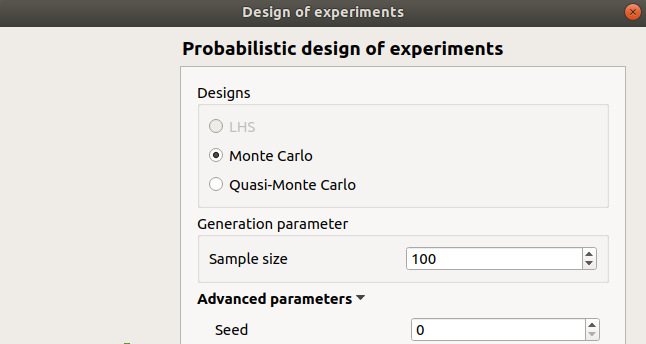
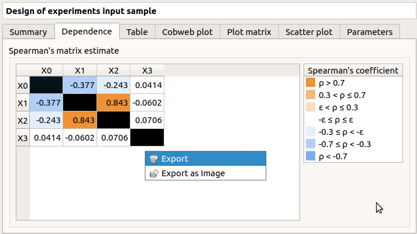
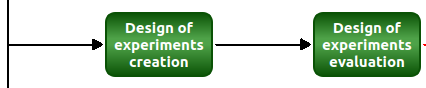
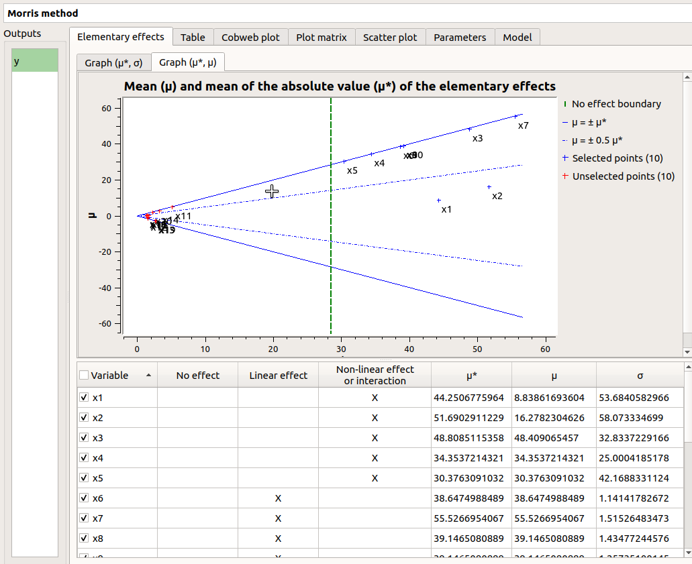
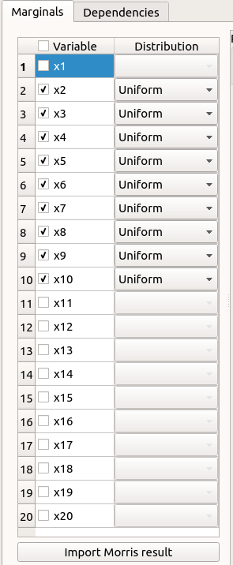
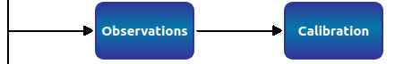

User manual - Deterministic analyses¶
- The interface allows the user to launch the following types of deterministic analysis:
- Designs of experiments for model evaluations on a set of input values
- Model evaluations
- Screening
- Optimization
1- Designs of experiments¶
The user may defined a set of input values and then evaluate output variable at these points.
1-1 Design of experiments creation¶
- Create a new design of experiment through:
The Design of experiments item in the context menu of the relevant model in the study tree (item Definition and item Probabilistic model if it exists)

The Design of experiments creation box of the model diagram

The New design of experiments item in the context menu of the Designs of experiments item

In the resulting window, the user has to choose between three types of design prior to click on the Continue button:
- Full factorial design
- Probabilistic design
- Imported design

If the model does not contain stochastic input variables the Probabilistic item is disabled.
1-1-1 Deterministic design¶

This window enables to create a points grid by regularly discretizing a pavement with the number of points specified in each direction.
The table lists all the input variables of the physical model. The user can choose the ones which vary and the ones which are fixed. A variable is fixed when the corresponding row is unselected (default: all variables are unselected and the grid contains only one point).
Fixed input variables: The user can define the value of the variable (default: value in the physical model definition). The values are expected to be floating points or integer.
Varying input variables: The user has to define the lower and upper bound for the variable. The values of the variable will be regularly spaced between the bounds. The bounds are always points of the grid.
The number of values is defined in the sixth column. The combo boxes of the fifth column have two items Levels= (default) and Delta=.
- Levels: the user gives the number of points (default: 2).
- Delta: the user gives the space between two points (default: (upper bound - lower bound)).
1-1-2 Probabilistic design¶
Define a probabilistic model to make this option available.
If stochastic input variables are present in the model, the Probabilistic item can be selected in the Input Sample definition window. Then the next window allows to specify:
- the type of the design: LHS (Latin Hyper Cube), Monte Carlo, Quasi-Monte Carlo. If input variables are correlated, LHS design is not available
- the size of the design of experiments
- the seed of the random generator (default: 0, positive integer expected)
1-1-3 Import data¶

The user can also import a design of experiments, from an external file. It is then necessary to set the link between the columns of the imported design and the input variables of the physical model, by clicking on the column name (default : first column for the first input variable, second column for the second input variable, etc…).
1-1-4 Design of experiments: input sample¶
When the input sample is defined, a new element appears in the study tree, below Designs of experiments.
- Its context menu has the following actions:
- Rename: Rename the design of experiments
- Modify: Reopen the setting window to change the design of experiments parameters (modify the inputs values leads to remove the output values from the design of experiments)
- Export data: Export the design of experiments into a file
- Evaluate: Open a setting window to evaluate the model at the input points (if the design of experiments contains already output values, this item is disabled)
- Remove: Remove the design of experiments from the study
A new window also appears:
The window shows numerous tabs, some of which are interactively linked (Table, Cobweb plot, Plot matrix and Scatter plot tabs): when the user selects points on one of these representations, the same points are automatically selected in the other tabs.
The Summary tab describes the input sample: sample size, minimum/maximum values of the selected variable (left column)
The Dependence tab displays the Spearman’s matrix estimate.
- The cells are colored according to the value of the Spearman’s coefficient.
- Its context menu allows to export the table in a CSV file or as a PNG image.
- Select cells and Press Ctrl+C to copy values in the clipboard
The Table tab contains all the points of the input sample. The table can be exported (Export button).
- Table interactivity:
- Left-click (optional: + Ctrl) on lines to select them
- Left-click on column header to sort values in ascending or descending order
- Left-click on a column header and drag it in another place to change columns order

The Cobweb plot tab displays all the points of the input sample.
- Use the Graph settings window to set up graphical parameters.
- Graph interactivity:
- Left-click on columns to select curves (multiple selection possible)

The Plot matrix tab: histograms of the distribution of each variable (diagonal) and scatter plots between each couple of input variables (off-diagonal).
- Use the Graph settings window to set up graphical parameters.
- Graph interactivity:
- Right-click to select points
- Left-click to translate the graph
- Mouse wheel up/down to zoom in/zoom out

The Scatter plots tab displays the scatter plot of two parameters.
- Use the Graph settings window to set up graphical parameters and select the variables to plot on X-axis and Y-axis (default: first versus second input)
- Graph interactivity:
- Right-click to select points
- Left-click to translate the graph
- Mouse wheel up/down to zoom in/zoom out

The Parameters tab lists the design parameters.
1-2 Design of experiments: evaluation¶
- New design of experiments can be evaluated through:
the Evaluate item in the context menu of the relevant design in the study tree

the Design of experiments evaluation box of the model diagram

1-2-1 Definition¶
- When an evaluation is required, a window appears, in order to set up:
- the output variables of interest: at least one must be selected to validate the window
- the block size – the number of runs launched simultaneously – for parallelization purposes (default=1; expected= integer). It must be less than the input sample size.

If the window is required by clicking on the box of the model diagram, it lists all the designs of experiments of the model in the combo box of the Design of experiments section.
1-2-2 Launch¶
When the Design of experiment: Evaluation window is validated, a new element Evaluation appears in the study tree, below the relevant design of experiments item.
- Its context menu has the following actions:
- Modify: Reopen the setting window to change the evaluation parameters;
- Metamodel: Create a new metamodel.
This item is associated with a window showing the parameter list, a progress bar and Run/Stop buttons, to launch or stop the analysis.

1-2-3 Results¶
When the analysis is finished or stopped, the following window appears.

The window shows numerous tabs, some of which are interactively linked (Table, Cobweb plot, Plot matrix and Scatter plot tabs): when the user selects points on one of these representations, the same points are automatically selected in the other tabs.
The Summary tab summarizes the results of the design, for a selected variable (left column): sample size, minimum/maximum values, input values at the extrema of the outputs, moments estimates and empirical quantiles.
The PDF/CDF tab presents the PDF/CDF of the variables together with a kernel smoothing representation.
- Use the Graph settings window to set up graphical parameters and select the graphic type: PDF (default) or CDF
- Graph interactivity:
- Left-click to translate the graph
- Mouse wheel up/down to zoom in/zoom out
The Box plots tab presents the box plot of the variables.
Use the Graph settings window to set up graphical parameters.
- Graph interactivity:
- Left-click to translate the graph
- Mouse wheel up/down to zoom in/zoom out

The Dependence tab displays the Spearman’s matrix estimate.
- The cells are colored according to the value of the Spearman’s coefficient.
- Its context menu allows to export the table in a CSV file or as a PNG image.
- Select cells and Press Ctrl+C to copy values in the clipboard

The Table tab shows the input/output samples and additional tabs, if some points failed or were not evaluated (see below). The table can be exported (Export button).
- Table interactivity:
- Left-click (optional: + Ctrl) on lines to select them
- Left-click on column header to sort values in ascending or descending order
- Left-click on a column header and drag it in another place to change columns order
The Cobweb plot tab displays all the points of the design of experiments.
- Use the Graph settings window to set up graphical parameters.
- Graph interactivity:
- Left-click on columns to select curves (multiple selection possible)

The Plot matrix tab: histograms of the distribution of each variable (diagonal) and scatter plots between each couple of input/output variables (off-diagonal).
- Use the Graph settings window to set up graphical parameters.
- Graph interactivity:
- Right-click to select points
- Left-click to translate the graph
- Mouse wheel up/down to zoom in/zoom out
The Scatter plots tab displays the scatter plot of two parameters.
- Use the Graph settings window to set up graphical parameters and select the variables to plot on X-axis and Y-axis (default: first output versus first input)
- Graph interactivity:
- Right-click to select points
- Left-click to translate the graph
- Mouse wheel up/down to zoom in/zoom out

The Parameters tab lists the evaluation parameters.

The Model tab shows the model content used to perform the analysis.
- Particular situations:
In some cases, points can fail (i.e. division by zero): the Table tab will then show additional tabs:

The Table tab shows the input/output samples
- Table interactivity:
- Left-click (optional: + Ctrl) on lines to select them
- Left-click on column header to sort values in ascending or descending order
- Left-click on a column header and drag it in another place to change columns order
The Failed points tab shows all the failed input points
The Cobweb plot tab displays all the input points. The status of each point is shown in the last column Status (failed points=0; evaluated points=1).
- Use the Graph settings window to set up graphical parameters.
- Graph interactivity:
- Left-click on columns to select curves (multiple selection possible)

On the figure above, the failed values are due to null values for the Ks input variable.
The Scatter plot tab displays the scatter plot of two parameters (default: first versus second input), with failed points in red and evaluated points in green.
- Use the Graph settings window to set up graphical parameters and select the variables to plot on X-axis and Y-axis (default: first output versus first input)
- Graph interactivity:
- Right-click to select points
- Left-click to translate the graph
- Mouse wheel up/down to zoom in/zoom out

On the figure above, the failed values are due to null values for the Ks input variable.
Some points can also end up not being evaluated (i.e. interrupted analysis). The Table tab then displays informative tabs about these points:
The list of these points in the Non-evaluated points tab
The position of these points (non-evaluated points in blue and evaluated ones in green) in the Scatter plot tab (default: first vs second input plot). Graph parameters can be set up in the Graph settings window.

2- Model evaluation¶
The user may evaluate the physical model for defined input values.
- Create a new model evaluation through:
The Definition item in the context menu of the relevant model in the study tree
The Model evaluation box of the model diagram
The New evaluation item in the context menu of the Evaluation section

2-1 Definition¶

- When an evaluation is required, a window appears, in order to set up:
- The outputs of interest (Select outputs - default: all outputs are evaluated). At least one variable must be selected to validate the window.
- The value of the input variables (default: value in the physical model definition). The values are expected to be floating points or integer.
2-2 Launch¶
When the Model Evaluation window is validated, a new element appears in the study tree, below Evaluation.
- Its context menu has the following actions:
- Rename: Rename the analysis
- Modify: Reopen the setting window to change the analysis parameters
- Remove: Remove the analysis from the study
This item is associated with a window showing the parameter list, a progress bar and Run/Stop buttons, to launch or stop the analysis.

2-3 Results¶
When the evaluation is finished, a result window appears. It gathers the coordinates of the evaluation point and the corresponding output values.

3- Screening¶
The interface proposes one method of screening, the Morris method.
- New screening analysis can be created thanks to:
the Screening item in the context menu of the relevant model in the study tree
the Screening box of the model diagram
the New Analysis item in the context menu of the Screening section
3-1 Definition¶
- When the analysis is required, the following window appears, in order to set up:
- The outputs of interest (Select outputs - default: all outputs are analyzed)
- The screening Method (only the Morris method is available for now)

The next window enables the user to define the lower and upper bounds of each variable. The values of the variables will be regularly spaced between these bounds.

- In the third window (Morris Parameters), the user can set up:
- The number of trajectories (default:10; integer expected)
- The level to define a regular grid (default: 5; integer expected)
- Advanced Parameters (default: hidden): the seed of the random generator (default: 0, positive integer expected)
3-2 Launch¶
When the « Screening analysis » window is validated, a new element appears in the study tree, below Screening.
- Its context menu has the following actions:
- Rename: Rename the analysis
- Modify: Reopen the setting window to change the analysis parameters
- Remove: Remove the analysis from the study
This item is associated with a window showing the parameter list, a progress bar and Run/Stop buttons, to launch or stop the analysis.

3-3 Results¶
When the analysis is finished or stopped, a result window appears.

On the left of the result window, the Outputs section allows the user to select the result to display.
The results window gathers several tabs:
The Elementary effects tab presents for a selected output (left column): a table with the effects of each input variable and the mean of the absolute value (), the standard deviation () and the mean () of the elementary effects. These values are plotted in the graphs and .
The types of effects are determined automatically according to two criteria modeled by two lines in the graph :
the green vertical dotted line, called No effect boundary is defined by:
, (with in and the number of inputs).
- It separates the variables into two groups:
- the variables which have no effect ()
- the variables which have an effect ()
This boundary can be changed by the user by clicking (left-click) on the X-axis.
the blue dotted line, called ‘cv = 0.5’ is defined by: .
- It separates the variables into two groups:
- the variables which have a linear effect ()
- the variables which have a non-linear effect or interaction ()
- On the graph , the blue lines separate the variables into two groups:
- the monotonic variables ()
- the non-monotonic variables ()
The sign of gives the direction of the effect.
By default, in the table, the variables with no effect are unselected.
- The user can de/select variables manually by:
- changing the state of the check button associated with the variable in the table
- de/selecting points in the graphs (select point with a right-click, then click on de/select button of the context menu which appears).

The selection of the influential variables is saved. This result can be used in the probabilistic model definition window to transform the non-influential stochastic variables into deterministic variables.
The Table tab shows the sample generated by the Morris method and the resulting output values.
- Table interactivity:
- Left-click (optional: + Ctrl) on lines to select them
- Left-click on column header to sort values in ascending or descending order
- Left-click on a column header and drag it in another place to change columns order
The Cobweb plot tab displays the sample.
- Use the Graph settings window to set up graphical parameters.
- Graph interactivity:
- Left-click on columns to select curves (multiple selection possible)
The Plot matrix tab: histograms of the distribution of each variable (diagonal) and scatter plots between each couple of input/output variables (off-diagonal).
- Use the Graph settings window to set up graphical parameters.
- Graph interactivity:
- Right-click to select points
- Left-click to translate the graph
- Mouse wheel up/down to zoom in/zoom out

The Scatter plots tab displays the scatter plot of two parameters.
Use the Graph settings window to set up graphical parameters and select the variables to plot on X-axis and Y-axis (default: first output versus first input)
- Graph interactivity:
- Right-click to select points
- Left-click to translate the graph
- Mouse wheel up/down to zoom in/zoom out

The Parameters tab reminds the user of all the parameters values used to perform the analysis.
The Model tab shows the model content used to perform the analysis.
3-4 Use results¶
In the probabilistic model definition window, click on the button Import Morris result placed below the table.

The followed window appears (only if a result exists):

Select the suitable result and click on the Finish button. The probabilistic model is modified as follows:
Of course loading a result while all the input variables are already deterministic will not work…
4- Optimization¶
The user may optimize the physical model.
- New model optimization can be created through:
the Optimization item in the context menu of the relevant model in the study tree
the Optimization box of the model diagram
the New Analysis context menu of the Optimization section
4-1 Definition¶
- When this analysis is required, the following window appears, in order to set up:
- The output of interest (Select output - default: the first output is analyzed)
- The method of optimization (default: Cobyla). The two first methods Cobyla and TNC are proposed by OpenTURNS. The other methods are solvers from the non-linear optimization library NLopt (if it is installed).
- In the table of the next window:
- First column: Select the inputs which will vary by checking off the corresponding line (default: all inputs vary) At least one input must vary.
- Second column: description of the variables (defined in the model)
- Third column: Define the starting point of the optimization (default: value in the physical model definition)
- Fourth and Fifth columns: Define the bounds of the variable inputs. The lower bound must be less than the upper bound. Check off/uncheck a cell to make the bound finite/infinite. The interval must contain the initial value (third column).

The values of the table are expected to be floating points or integer.
- When a rule is not respected:
- the input name is colored in red
- an error message appears when clicking on the Continue button
- it is impossible to go to the next page
- In the third window set up:
- the type of the optimization: Minimization or Maximization (default: Minimization)
- the stopping criteria:
- the maximum number of function evaluations (default: 100, positive integer expected)
- the errors: absolute, relative, residual and constraint errors (default: 1e-5, positive float expected)

4-2 Launch¶
When the « Optimization » window is validated, a new element appears in the study tree, below Optimization.
- Its context menu has the following actions:
- Rename: Rename the analysis
- Modify: Reopen the setting window to change the analysis parameters
- Remove: Remove the analysis
This item is associated with a window showing the parameter list, a progress bar and Run/Stop buttons, to launch or stop the analysis.

Click on the Start button to launch the analysis.
4-3 Results¶
When the analysis is finished, a result window appears.

The results window gathers the following tabs:
- The Result tab includes:
- The optimal point
- The optimization stopping criteria value:
- The number of function evaluations;
- The errors: absolute, relative, residual and constraint errors.
- The Convergence tab includes:
- The optimal value convergence graph
- The convergence graph of the errors
- Graph interactivity:
- Left-click to translate the graph
- Mouse wheel up/down to zoom in/zoom out

The Parameters tab reminds the user of all the parameters values to perform the analysis.
The Model tab shows the model content used to perform the analysis.
5- Observations¶
To perform a calibration analysis, define first observations for at least one output and one input.
5-1 Definition¶
Import a data file. Then set the link between columns of the imported data and variables of the physical model by clicking on the column name (default : first column for the first input variable, second column for the first output variable). Define observations for at least one output and one input.
5-2 Results¶
When the sample is defined, a new element appears in the study tree, below Calibration. This item is associated with a window showing a table of the observation values.

6- Calibration¶
The interface proposes to calibrate the physical model.
- New model calibration can be created through:
the Calibration item in the context menu of the relevant Observations in the study tree

the Calibration box of the model diagram
the New Analysis context menu of the Calibration section
6-1 Definition¶
- When this analysis is required, the following window appears, in order to set up:
- The observations of interest
- The method: Linear least squares (default), Non linear least squares, Linear Gaussian, Non linear Gaussian

- In the table of the next window:
- First column: Select the inputs which will be calibrated by checking off the corresponding line (default: all inputs are calibrated) At least one input must be calibrated.
- Second column: description of the variables (defined in the model)
- Third column: Define the reference point of the calibration (default: value in the physical model definition)

The values of the table are expected to be floating points or integer.
- When a rule is not respected:
- an error message appears when clicking on the Continue button
- it is impossible to go to the next page
6-1-1 Gaussian methods¶
In the next window set up the prior distribution covariance matrix. The window lists automatically the calibrated input variables in the table. The mean values are defined in the table of the previous window.

In the next window define the covariance matrix of the output observations error. The window lists automatically the observed output variables in the table. The mean is zero. Default standard deviation is 0.1.

6-1-2 Linear methods¶
In the last window set up the confidence interval length of the posterior distribution.

6-1-3 Non linear methods¶
- In the last window set up:
- the confidence interval length of the posterior distribution
- computation of the confidence interval by Bootstrap resampling (default: checked)
- the sample size (default: 100, positive integer expected)
- the optimization stopping criteria:
- the maximum number of function evaluations (default: 100, positive integer expected)
- the errors: absolute, relative, residual and constraint errors (default: 1e-5, positive float expected)

6-2 Launch¶
When the « Calibration » window is validated, a new element appears in the study tree, below the observations item.
- Its context menu has the following actions:
- Rename: Rename the analysis
- Modify: Reopen the setting window to change the analysis parameters
- Remove: Remove the analysis
This item is associated with a window showing the parameter list, a progress bar and Run/Stop buttons, to launch or stop the analysis.

Click on the Start button to launch the analysis.
6-3 Results¶
When the analysis is finished, a result window appears.

It shows numerous tabs, some of which are interactively linked (Table, vs Observations, vs Inputs tabs): when the user selects points on one of these representations, the same points are automatically selected in the other tabs.
The results window gathers the following tabs:
- The θ tab includes:
- The optimal point and its confidence interval (Optimal tab)
- The prior and posterior PDF of the calibrated inputs (PDF tab)
- The Prediction tab includes, for a selected output (left column):
The Table tab contains the observations, the prior and posterior values and the prior and posterior residuals values. The table can be exported (Export button).
- Table interactivity:
- Left-click (optional: + Ctrl) on lines to select them
- Left-click on column header to sort values in ascending or descending order
- Left-click on a column header and drag it in another place to change columns order
The vs Observations tab displays the prior and posterior predictions vs the output observations. The calibration performed well when the predictions after calibration (i.e. the green points) are close to the the diagonal of the graph (i.e. the blue points).
- Use the Graph settings window to set up graphical parameters and select the data to plot
- Graph interactivity:
- Right-click to select points
- Left-click to translate the graph
- Mouse wheel up/down to zoom in/zoom out

The vs Inputs tab displays the prior and posterior predictions vs the input observations. The calibration performed well when the predictions after calibration (i.e. the green points) are close to the observations (i.e. the blue points).
- Use the Graph settings window to set up graphical parameters and select the data to plot and the variables to plot on X-axis (default: all predictions versus first observed input)
- Graph interactivity:
- Right-click to select points
- Left-click to translate the graph
- Mouse wheel up/down to zoom in/zoom out

The Residuals tab display the distribution of the residuals (blue curve) and the Probability Distribution Function values of the difference between the output observations and the prior (red curve) and posterior (green curve) output values. The calibration performed well when the distribution of the residuals is centered on zero and symmetric.
- Use the Graph settings window to set up graphical parameters and select the data to plot
- Graph interactivity:
- Left-click to translate the graph
- Mouse wheel up/down to zoom in/zoom out

The Parameters tab reminds the user of all the parameters values to perform the analysis.
The Model tab shows the model content used to perform the analysis.